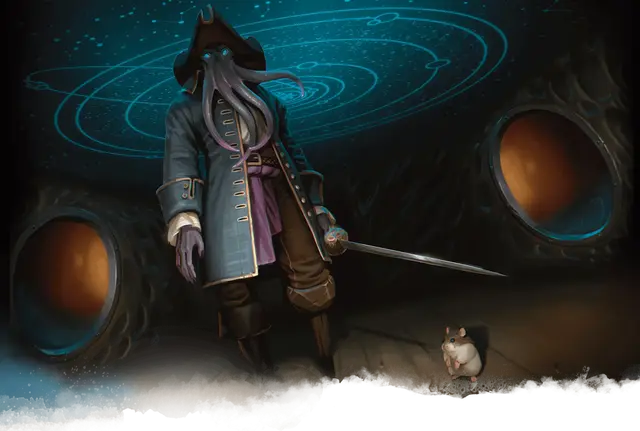

Капитан Н'Гатрод
Captain N'ghathrod
Средняя Аберрация, законно-злая, именной НИП

Класс Доспеха 15 (кираса)
Хиты 71 (13к8 + 13)
Скорость 30 футов
| мод | спас | ||
|---|---|---|---|
| СИЛ | 11 | +0 | +0 |
| ЛОВ | 12 | +1 | +1 |
| ТЕЛ | 12 | +1 | +1 |
| мод | спас | ||
|---|---|---|---|
| ИНТ | 19 | +4 | +7 |
| МДР | 17 | +3 | +6 |
| ХАР | 17 | +3 | +6 |
Навыки Восприятие +6, Магия +7, Обман +6, Проницательность +6, Скрытность +4, Убеждение +6
Чувства тёмное зрение 120 футов, пассивное Восприятие 16
Языки Глубинная речь, Подземный, Телепатия 120 фт.
Опасность 8 (3900 опыта)
Бонус мастерства +3
Особенности
Сопротивление магии. Свежеватель разума совершает с преимуществом спасброски от заклинаний и прочих магических эффектов.
Врождённое колдовство (псионика). Базовой характеристикой свежевателя разума является Интеллект (Сл спасброска от заклинания 15). Он может накладывать следующие заклинания, не нуждаясь ни в каких компонентах:
• Неограниченно: левитация [levitate], обнаружение мыслей [detect thoughts];
• 1/день каждое: подчинение чудовища [dominate monster], уход в иной мир [plane shift] (только на себя).
Использование заклинаний. . Свежеватель разума является заклинателем 10-го уровня. Его базовой характеристикой является Интеллект (Сл спасброска от заклинания 15,+7 к попаданию атаками заклинаниями). У него подготовлены следующие заклинания волшебника:
• Заговоры (неограниченно): волшебная рука [mage hand], защита от оружия [blade ward], пляшущие огоньки [dancing lights], электрошок [shocking grasp];
• 1 уровень (4 ячейки): маскировка [disguise self], обнаружение магии [detect magic], усыпление [sleep], щит [shield];
• 2 уровень (3 ячейки): размытый образ [blur], луч слабости [ray of enfeeblement], невидимость [invisibility];
• 3 уровень (3 ячейки): молния [lightning bolt], подсматривание [clairvoyance], послание [sending];
• 4 уровень (3 ячейки): мираж [hallucinatory terrain], смятение [confusion];
• 5 уровень (2 ячейки): силовая стена [wall of force], телекинез [telekinesis],
Действия
Щупальца. Рукопашная атака оружием: +7 к попаданию, досягаемость 5 футов, одно существо. Попадание: Урон психической энергией 15 (2к10 + 4). Если размер цели не больше Среднего, она становится схваченной (Сл высвобождения равна 15) и должна преуспеть в спасброске Интеллекта Сл 15, иначе станет ошеломленной, пока не перестанет быть схваченной.
Извлечение мозга. Рукопашная атака оружием: +7 к попаданию, досягаемость 5 футов, один недееспособный гуманоид, схваченный свежевателем разума. Попадание: Цель получает колющий урон 55 (10к10). Если этот урон уменьшает хиты цели до 0, свежеватель разума убивает цель, извлекая и пожирая её мозг.
Взрыв сознания (перезарядка 5–6). Свежеватель разума магическим образом испускает психическую энергию 60-футовым конусом. Все существа в этой области должны преуспеть в спасброске Интеллекта Сл 15, иначе получат урон психической энергией 22 (4к8 + 4) и станут ошеломленными на 1 минуту. Существо может повторять этот спасбросок в конце каждого своего хода, оканчивая эффект на себе при успехе.
Действия логова
Сражаясь на борту Поглотителя, Н'Гатрод при значении инициативы «20» (в случае ничьей проигрываем всем оппонентам) может совершить действие логова, чтобы вызвать один следующих эффектов:
• Н'Гатрод создает магическую копию самого себя в любом месте на борту корабля. Сформированная из псионической энергии копия существует до тех пор, пока её хиты не уменьшатся до 0, или пока не будет развеяна (Сл развеивания 15), или пока Н'Гатрод не предпримет другое действие логова. Копия обладает статистикой свежевателя разума [mind flayer] и дружелюбна к Н'Гатроду, но не находится под его контролем. Она не может покинуть Поглотитель.
• Н'Гатрод заполняет все внутренние помещения корабля искажающими сознание образами и звуками из Дальнего предела, длящимися при значении инициативы «20» до следующего раунда. Любое существо, не являющееся аберрацией и начинающее свой ход внутри корабля, должно преуспеть в спасброске Мудрости Сл 15 или получить 10 (3к6) урона психической энергией.
Описание
Капитан Поглотителя - пират, пожиратель разума Н'Гатрод. В качестве заклинательной фокусировки он использует кристаллическую сферу и одевается как самый настоящий пират.
Деревянная культя заменяет одну из его ног, потерянную в одной из битв много лет назад. В карманы сюртука убраны четыре серых драгоценных камня размером с кулак - камни управления серых слаадов, охраняющих верхнюю палубу корабля. Для пущего эффекта Н'Гатрод носит рапиру, но он не опытен в обращении с этим оружием.
До того как Н'Гатрод ударился в межзвездное пиратство, он жил в колонии иллитидов на окруженной кольцами льда и астероидов планете Глит, шестой планете от солнца Торила. Через несколько недель после того, как Поглотитель оказался в ловушке Подгорья, Н'Гатрод от голода набросился на состоящий из орогов экипаж, убив четверых и сожрав их мозг. Остальные члены экипажа сбежали с судна, опасаясь подобной участи. Прибытие искателей приключений дает Н'Гатроду неожиданный, но страстно желаемый источник пищи. В первую очередь он попытается отделить одного из членов партии от остальных заклинанием силовая стена [wall of force]. Затем используя Взрыв сознания ошеломляет свою жертву и приступает к извлечению ее мозга.
Если хиты Н'Гатрода уменьшатся до 55 и менее, его инстинкт выживания заставит забыть о голоде, побуждая заявить телепатически о капитуляции. Пожиратель разума приносит свои извинения за нападение и предлагает прекратить боевые действия. Получив желаемое, он расскажет, что Поглотитель дрейфовал по орбите Торила, когда его втянули через магические врата в это место. Также он скажет, что вскоре после этого исчез штурвал мародера [helm of the Scavenger] (что произошло при помощи заклинания исполнение желаний [wish], хотя иллитиду про это ничего неизвестно). Если пожиратель разума и персонажи заключат перемирие, Н'Гатрод предлагает свои услуги по "охране корабля", в то время как авантюристы отправляются на поиски украденного кормила. В случае успеха персонажей, Н'Гатрод соглашается с понижением в должности и позволяет им распоряжаться судном как своей собственностью до тех пор, пока не найдет способа избавиться от них.